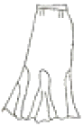
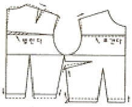
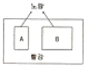

양장기능사 (2010-01-31 기출문제)
1과목: 임의 구분
1. 재단할 때의 주의사항으로 옳은 것은?
- 소매, 바지 등의 단부분이 좁아 경사가 많으면 시접을 펴놓고 재단한다.
- 바이어스 테이프를 장식으로 댈 때는 시접을 넣지 않는다.
- 안단의 시접은 칼라형에 관계없이 같게 잡는다.
- 다트다 주름은 펴놓고 시접을 넣지 않고 재단한다.
(정답률: 76%)

2. 재봉기 바늘의 번수에 대한 설명으로 가장 옳은 것은?
- 번호가 높을수록 바늘은 가늘다.
- 번호와 굵기는 상관이 없다.
- 번호가 높을수록 바늘은 굵다.
- 번호가 높을수록 바늘은 짧고 가늘다.
(정답률: 91%)
3. 일반적인 각 부위의 기본 시접 분량으로 옳은 것은?
- 목둘레 - 2cm
- 칼라 - 2cm
- 어깨와 옆선 - 2cm
- 소매단 - 2cm
(정답률: 86%)
4. 재봉기의 용도에 따른 분류에 해당되지 않는 것은?
- 단환봉
- 직선봉
- 자수봉
- 장식봉
(정답률: 54%)
5. 다음 그림의 스커트 명칭은?

- 티어드 스커트(Tiered Skirt)
- 디바이드 스커트(Divided Skirt)
- 랩 스커트(Wrap Skirt)
- 고젯 스커트(Gusset Skirt)
(정답률: 68%)
6. 길 원형의 필요 치수에서 가장 중요한 항목에 해당되는 것은?
- 앞길이
- 등너비
- 어깨너비
- 가슴둘레
(정답률: 84%)
7. 길 원형 제도에 사용되는 부호가 아닌 것은?
- N, P
- C, B, L
- S, P
- S, C, P
(정답률: 69%)
8. 단촌식 제도법의 특징으로 옳은 것은?
- 인체의 각 부위를 세밀하게 계측하여 제도한다.
- 인체 부위 중 가장 대표적인 부위만 측정한다.
- 초보자에게 바람직하다.
- 체형 특징에 맞도록 하기 위해서는 보정 과정을 거쳐야 한다.
(정답률: 81%)
9. 디자인에 의한 명칭으로 부르는 소매의 설명으로 틀린 것은?
- 벨 슬리브 - 소매입구를 말아 올려 입는 소매
- 레그 오브 머튼 슬리브 - 소매산에는 개더를 넣어 펴서 소매처럼 하고, 소매부리로 갈수록 좁아지게 한 소매
- 랜턴 슬리브 - 반소매인데 등초롱과 같은 형태로 부풀린 소매
- 비숍 슬리브 - 소매부리만 개더를 잡은 퍼프 소매
(정답률: 54%)
10. 원가계산 방법으로 틀린 것은?
- 제조원가 = 재료비 + 인건비 + 제조경비
- 총원가 = 제조원가 + 판매간접비 + 일반관리비
- 판매가 = 총원가 + 관리비
- 이익 = 판매가 - 총원가
(정답률: 59%)
11. 정상적인 체형보다 어깨가 처진 경우의 보정 방법으로 옳은 것은?
- 어깨를 내려주고 어깨 처진만큼 진동 둘레 밑부분은 올려준다.
- 어깨를 내려주고 어깨 처진만큼 진동 둘레 밑부분도 내려준다.
- 어깨선을 올려 보정하고 그 분량만큼 진동 밑부분은 내려준다.
- 어깨선을 올려 보정하고 그 분량만큼 진동 밑부분은 올려준다.
(정답률: 82%)
12. 위와 아래의 박혀진 모양이 같은 것이 특징으로 모든 재봉기의 기본이 되는 재봉기는?
- 단환봉 재봉기
- 본봉 재봉기
- 이중환봉 재봉기
- 지그재그 재봉기
(정답률: 73%)
13. 인체 인자 요소 중 형태적 인자에 해당되지 않는 것은?
- 인체치수
- 체형
- 체표면적
- 피부표면온도
(정답률: 93%)
14. 목둘레선에서 겨드랑이에 사선으로 절개선이 들어간 소매는?
- 래글런 소매
- 프렌치 소매
- 케이프 소매
- 퍼프 소매
(정답률: 77%)
15. 다음 중 길과 소매가 절개선 없이 연결하여 구성되는 소매는?
- 퍼프(Puff) 소매
- 캡(Cap) 소매
- 요크(Yoke) 소매
- 플리츠(Pleats) 소매
(정답률: 64%)
16. 손바느질 중 박음질의 설명으로 틀린 것은?
- 바늘땀을 되돌아와서 다시 뜨는 방법이다.
- 손바느질 중에서 가장 튼튼하게 처리되는 방법이다.
- 솔기를 잇거나 개더를 만들 때 사용하는 방법이다.
- 재봉기로 박는 것과 같은 모양으로 겉면에 나타난다.
(정답률: 78%)
17. 두꺼운 모직물을 재봉기로 바느질할 때 알맞은 실과 바늘로서 가장 옳은 것은?
- 면 505, 9호 바늘
- 폴리에스테르 60D/2×3, 14호 바늘
- 면 805, 16호 바늘
- 견 350/4×3, 16호 바늘
(정답률: 45%)
18. 시접을 완전히 감싸는 방법으로 얇고 비치거나 풀리기 쉬운 옷감으로 옷을 만들 때 이용되는 솔기는?
- 통솔
- 평솔
- 쌈솔
- 뉜솔
(정답률: 75%)
19. 가로 또는 세로 방향으로 옷감에 주름을 접어 일정한 간격으로 박아서 장식하는 바느질법은?
- 턱킹
- 퀼팅
- 파고팅
- 스모킹
(정답률: 74%)
20. 재봉기의 윗실거는 순서로서 가장 옳은 것은?
- 실걸이대 → 실채기 → 윗실조절기
- 실채기 → 실걸이대 → 윗실조절기
- 실걸이대 → 윗실조절기 → 실채기
- 윗실조절기→ 실채기 → 실걸이대
(정답률: 70%)
2과목: 임의 구분
21. 실표뜨기 방법에 대한 설명으로 틀린 것은?
- 면사 2울로 한다.
- 바늘땀을 3cm 정도로 뜬다.
- 두 장의 옷감을 겹쳐 시작한다.
- 곡선은 느리게, 직선은 잘게 뜬다.
(정답률: 75%)
22. 제도에 필요한 부호 중 소매산 높이에 해당되는 것은?
- A, H, L
- S, C, H
- S, B, L
- S, N, P
(정답률: 76%)
23. 룰렛이나 재단 주걱 등으로 표시하기 어려운 옷감을 두 겹으로 겹쳐 놓고 재단했을 때 완성선 표시를 하는 것은?
- 휘감치기
- 새발뜨기
- 공그리기
- 실표뜨기
(정답률: 90%)
24. 디테일의 규모를 결정하는 요소 중 의복이 주는 전체적인 느낌을 결정하는 것은?
- 실루엣
- 옷감의 재질
- 착용자의 체형
- 옷감의 배색
(정답률: 41%)
25. 너비가 150cm인 180° 플레어 스커트를 재단할 때 옷감의 필요량 계산법은?
- (스커트 길이 × 1.5) + 시접(6~15cm)
- (스커트 길이 × 2) + 시접(5~10cm)
- (스커트 길이 × 2.5) + 시접(5~12cm)
- 스커트 길이 + 시접(7~10cm)
(정답률: 54%)
26. 소매가 너무 좁은 경우의 보정방법에 대한 설명으로 가장 옳은 것은?
- 접어서 여유분을 없앤다.
- 가위집을 넣은 후 새로운 진동선을 그리고, 길원형의 진동 밑부분을 올린다.
- 식서방향을 따라 절개한 후 적당하게 벌려 패턴을 수정하고, 길의 진동둘레도 파준다.
- 바이어스 헝겊으로 덧대어 가봉한 후 진동둘레선을 수정한다.
(정답률: 80%)
27. 단추가 갖추어야 할 성능으로 틀린 것은?
- 가볍고 내충격성이 커야 한다.
- 세탁에 의해서 색이나 광택이 변하지 않아야 한다.
- 다림질에 의해서 녹거나 변색되지 않아야 한다.
- 단추 가격이 비싸야 한다.
(정답률: 93%)
28. 다음 그림의 보정 방법에 해당되는 체형은?

- 마른체형
- 비만체형
- 등이 굽은 체형
- 가슴이 큰 체형
(정답률: 83%)
29. 의복제도 부호 중 오그림 표시에 해당되는 것은?
(정답률: 82%)
30. 재봉기 기구 중 여러 가지 봉제 조건에 알맞도록 윗실과 밑실이 적당한 장력을 주어 옷감과 옷감 사이에서 윗실과 밑실을 교차시켜서 좋은 박음질이 되는 역할이 되는 것은?
- 실조절 기구
- 바늘대 기구
- 보내기 기구
- 실채기 기구
(정답률: 43%)
31. 재생섬유 중 셀룰로스 섬유를 원료로 하지 않는 것은?
- 비스코스레이온
- 구리암모늄레이온
- 래니탈
- 트리아세테이트
(정답률: 50%)
32. 비닐론 섬유의 특성에 대한 설명으로 틀린 것은?
- 염색성이 좋다 선명한 색상을 얻기 쉽다.
- 마모강도와 굴곡강도가 크다.
- 탄성과 레질리언스가 나빠서 구멍이 잘 생긴다.
- 형태안정성이 나쁘다.
(정답률: 59%)
33. 다음 중 공정수분율이 가장 높은 섬유는?
- 폴리에스테르
- 나일론
- 아크릴
- 폴리우레탄
(정답률: 29%)
34. 비스코스레이온 실의 길이가 9mm이며 무게가 5g인 실의 굵기(denier)는?
- 1 denier
- 5 denier
- 7 denier
- 45 denier
(정답률: 70%)
35. 조면기에서 분리된 면섬유는?
- 린트
- 린터
- 린터스
- 면실
(정답률: 39%)
36. 천연섬유 중에서 유일한 필라멘트 섬유에 해당되는 것은?
- 양모
- 견
- 면
- 마
(정답률: 78%)
37. 다음 중 내일광성이 가장 좋은 섬유는?
- 비스코스레이온
- 나일론
- 폴리에스테르
- 아크릴
(정답률: 60%)
38. 염색방법 중 침염에 해당되지 않는 것은?
- 후염
- 선염
- 날염
- 사염
(정답률: 58%)
39. 비스코스레이온 제조에 있어서 숙성공정의 필요성으로 옳은 것은?
- 점도를 감소시키기 위해
- 물이 녹지 않도록 하기 위해
- 방사 시 산에 잘 녹도록 하기 위해
- 점도와 용해도를 증가시키기 위해
(정답률: 49%)
40. 다음 중 폴리에스테르나 아세테이트 섬유의 염색에 가장 많이 사용되는 염료는?
- 분산염료
- 산성염료
- 직접염료
- 반응성염료
(정답률: 54%)
3과목: 임의 구분
41. 하나의 색상에 검정색의 포함량이 많아질 때 나타나는 변화로 옳은 것은?
- 고명도, 저채도가 된다.
- 저명도, 저채도가 된다.
- 저명도, 고채도가 된다.
- 명도와 채도의 변화가 없다.
(정답률: 79%)
42. 색의 대비에서 인간의 눈이 색의 3속성 중 가장 예민히 반응하며 두 색 사이에 명도, 색상, 채도 대비가 동시에 일어났을 때 가장 강하게 나타나는 현상은?
- 색상 대비
- 채도 대비
- 보색 대비
- 명도 대비
(정답률: 42%)
43. 옷감의 무늬에서 율동감을 얻을 수 있는 것은?
- 색이나 형의 반복
- 균제적인 균형
- 일부분을 특히 강조
- 조화있는 공간 설정
(정답률: 72%)
44. 어떤 무채색 옆에 유채색을 놓으면 그 무채색은 어떻게 보이는가?
- 잔상효과가 있어 보인다.
- 유채색의 보색 기미가 있어 보인다.
- 실제보다 밝게 보인다.
- 아무런 변화가 없다.
(정답률: 66%)
45. 먼셀 표새계의 색압체 수평 단면도에 대한 설명으로 틀린 것은?
- 수평 절단한 단면을 의미한다.
- 등명도면이라고도 한다.
- 중심은 윷애색이고 색상순으로 방사형을 이룬다.
- 같은 명도에서 채도의 차이와 색상의 차이를 한눈에 알 수 있다.
(정답률: 53%)
46. 의상에서 여성다운 부드러움, 우아함, 귀엽고 사랑스런 소녀적인 이미지를 표현하는 대표적인 컬러 이미지는?
- 내츄럴(natural)
- 엘레강스(elegance)
- 로맨틱(romantic)
- 후레쉬(fresh)
(정답률: 78%)
47. 의복 디자인에서 키를 커 보이게 하고 동시에 몸을 가늘어 보이게 하기 위한 수단으로 가장 많이 활용되는 것은?
- 세로선에 의해서 분할된 면에 의한 착시현상
- 가로선에 의해서 분할된 면에 의한 착시현상
- 사선에 의해서 분할된 면에 의한 착시현상
- 선의 길이에 의한 착시현상
(정답률: 78%)
48. 색상에 따른 느낌의 차이에서 가장 강하고 공통적인 것에 해당되는 것은?
- 운동감
- 면적감
- 중량감
- 온도감
(정답률: 72%)
49. 색의 대비에서 다음 그림과 같이 빨강 순색 바탕에 크기가 다른 같은 명도의 노랑 색지 A와 B를 놓았더니, B는 A보다 명도가 높게 보이는 것은?

- 색상 대비
- 명도 대비
- 채도 대비
- 면적 대비
(정답률: 77%)
50. 일반적으로 빨간색을 좋아하는 민족이 아닌 것은?
- 중국
- 인도
- 필리핀
- 아프리카
(정답률: 78%)
51. 불에 잘 타지 않는 약제를 부착시켜 불에 대한 내성을 부여하는 가공은?
- 방수가공
- 의마가공
- 대전방지가공
- 방열가공
(정답률: 87%)
52. 폴리에스테르 직물을 수산화나트륨 용액으로 처리하여 중량을 감소시킴으로서 견섬유에 가까운 특성을 지니게 하는 가공은?
- 알칼리감량가공
- 듀어러블프레스가공
- 런던슈헝크가공
- 머서화가공
(정답률: 50%)
53. 다음 중 염색물의 밀광견뢰도 판정에서 가장 우수한 등급은?
- 1급
- 3급
- 5급
- 8급
(정답률: 48%)
54. 바스켓직의 특성이 아닌 것은?
- 변화평직이다.
- 평직보다 내구성이 좋다.
- 표면결이 곱고 평활하다.
- 평직에 비해 조직점이 적어서 부드럽고 구김이 덜 생긴다.
(정답률: 46%)
55. 양모섬유의 세탁방법에 대한 내용 중 가장 옳은 것은?
- 건조는 직사일광에서 한다.
- 알칼리세제를 사용해야 한다.
- 드라이클리닝을 하여야 한다.
- 염소계 표백제를 사용해야 한다.
(정답률: 78%)
56. 다음 중 능직물의 특성에 해당되는 것은?
- 3원 조직 중 조직점이 가장 많다.
- 표면이 매끄럽고 광택이 가장 좋다.
- 구김이 잘 생긴다.
- 밀도를 크게 할 수 있어 두꺼우면서 부드러운 직물을 얻을 수 있다.
(정답률: 68%)
57. 중성 또는 약알칼리성의 중성염 수용액에서는 셀룰로스 섬유에 직접 염색되며, 산성하에서 단백질 섬유와 나일론에도 염착되는 염료는?
- 산성염료
- 염기성염료
- 직접염료
- 배트염료
(정답률: 38%)
58. 섬유에 금속염을 흡수시킨 다음 염색하면 금속이 염료와 배위결합을 하여 불용성 착화합물을 만드는 염료는?
- 산성염료
- 애염염료
- 아조익염료
- 황화염료
(정답률: 38%)
59. 피복의 위생적 성능에 가장 크게 영향을 미치는 것은?
- 통기성
- 밤추성
- 강연성
- 드레이프성
(정답률: 84%)
60. 직물의 표면이 평활하지 않고 오돌토돌하여 요철효과를 주는 작물은?
- 사직
- 파일직물
- 크레이프
- 이중직물
(정답률: 49%)